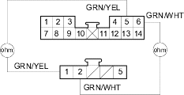
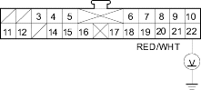

- Turn the ignition switch OFF.
- Check for continuity between the following terminals of climate control unit connector A (14P) and the recirculation control motor 5P connector.
14P: 5P: No. 5 No. 1 No. 6 No. 2
CLIMATE CONTROL UNIT CONNECTOR A (14P)
Wire side of female terminals

RECIRCULATION CONTROL MOTOR 5P CONNECTOR
Wire side of female terminals
Is there continuity?
YES - Check for loose wires or poor connections at climate control unit connector A (14P) and at recirculation control motor 7P connector. If the connections are good, substitute a known-good climate control unit and recheck. If the symptom/indication goes away, replace the original climate control unit. 
NO - Repair any open in the wire(s) between the climate control unit and the recirculation control motor.
- Remove the recirculation control motor (see page 21-49).
- Check the recirculation control linkage and doors for smooth movement.
Do the recirculation control linkage and doors move smoothly?
YES - Replace the recirculation control motor.
NO - Repair the recirculation control linkage or doors.
- Check the malfunction indicator lamp (MIL).
Does the malfunction indicator lamp come on?
YES - Refer to the fuel and emissions section (see page 11-3).
NO - Go to step 2.
- Turn the ignition switch OFF.
- Disconnect the ECT sensor 2P connector.
- Disconnect climate control unit connector B (22P).
- Turn the ignition switch ON (II).
- Measure the voltage between the No. 22 terminal of climate control unit connector B (22P) and body ground.
CLIMATE CONTROL UNIT CONNECTOR B (22P)

Wire side of female terminals
Is there about 5 V?
YES - Check for loose wires or poor connections at climate control unit connector B (22P) and at the ECT sensor 2P connector. If the connections are good, substitute a known-good climate control unit and recheck. If the symptom/indication goes away, replace the original climate control unit.
NO - Repair open in the wire between the climate control unit and the ECT sensor.